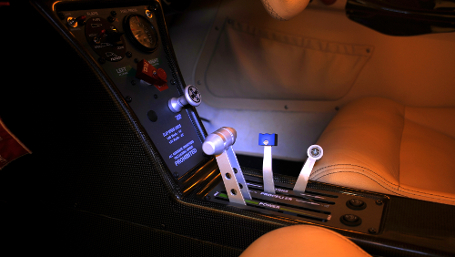

Powermax Propellor


The PowerMax is a three-blade tractor in flight adjustable aircraft propeller. The aluminum alloy hub consists of top and bottom flange with lid. The blade adjustment mechanisms are located inside the hub. Increasing of the blade angle is done by the actuator. For the opposite direction, the blades are adjusted through the resistance of spring located inside the hub. The carbon fibre blade has a steel root part and is mounted onto the hub by a pair of axial bearings. The actuator is located outside the hub, above the engine reduction unit, and controls the blade adjustment by a hollow axis of the reduction unit and the propeller.
Designed for Rotax engines
Powermax specifications
Sense of rotation Left (looking from the front)
Orientation of propeller installation Tractor
Number of blades 3
Diameter 1748 mm
Max. absorbed engine power 115 hp
Max. propeller speed 2387 ot/min
Angle pitch range 10º
Adjustment speed between outmost positions - with load 4,6 s
Sense of rotation Left (looking from the front)
Orientation of propeller installation Tractor
Number of blades 3
Diameter 1748 mm
Max. absorbed engine power 115 hp
Max. propeller speed 2387 ot/min
Angle pitch range 10º
Adjustment speed between outmost positions - with load 4,6 s

[Home]
Operating temperature range -25 º +40 ºC
Weight of propeller 10,2 kg
Weight of servo motor 1,25 kg
Weight of spinner 0,5 kg
Outer diameter of spinner Ø 235 mm
Diameter of mounting flange Ø 124 mm
Carrier bolts (pitch circle) Ø 13 mm (101,6 mm)
Fixing screws M 8
Number of bolts / mounting screws 6
Weight of propeller 10,2 kg
Weight of servo motor 1,25 kg
Weight of spinner 0,5 kg
Outer diameter of spinner Ø 235 mm
Diameter of mounting flange Ø 124 mm
Carrier bolts (pitch circle) Ø 13 mm (101,6 mm)
Fixing screws M 8
Number of bolts / mounting screws 6